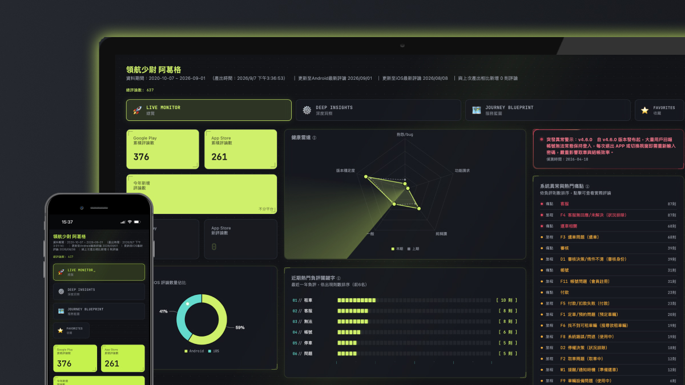
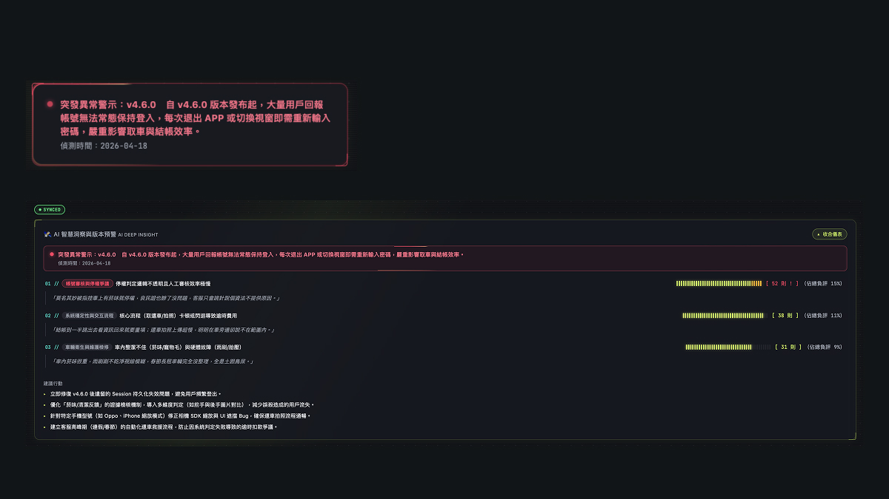
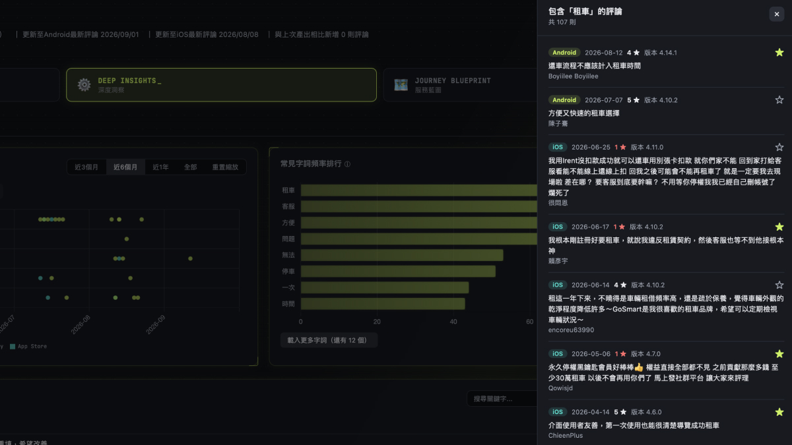
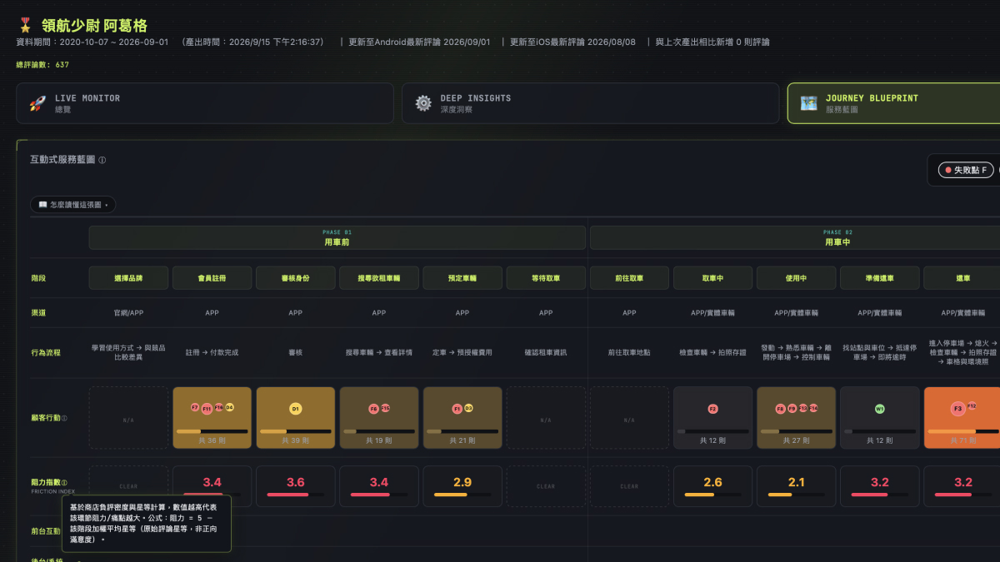

WORK・AI協作
突破過去缺乏大數據與手動翻閱的限制，本專案以 AI 敏捷協作自研評論追蹤系統。將雙平台數百則深空雜訊解碼為健康度監控、穿透式洞察、14 環節服務藍圖與 F/D/W 歸因，轉化為條理分明的設計任務。
合作對象
個人實驗專案
專案時間
2026
專案類型
Web / AI 協作
負責內容
資訊架構、UX 規劃

儀表板整合雙平台商店評論，提供健康總覽、深度穿透抽屜與 14 環節用車服務藍圖映射。
成果與結論
本專案跳脫傳統設計工具限制，以 100% 獨立開發結合 AI 協作，成功將雙平台零散評論轉化為具備 4 大追蹤亮點的自動化巡檢系統，讓質化抱怨轉變為可即時追溯、精準歸因的產品決策座標。
平台
商店評論整合
大特色
評論追蹤亮點
%
獨立開發
本專案重點
做設計常如在暗夜摸索，缺少大數據時只能依賴零星客訴。雙平台商店累積的評論是深空的微弱信號，我透過爬蟲與 AI 協作打造專屬前線「偵察兵」儀表板，將碎片雜訊打撈還原為大規模用戶在真實用車情境中的具體座標。
本專案設計流程
從傳統研究痛點切入，建置雙平台管線並導入碩論 14 環節與 F/D/W 研究模型；串接 Gemini API 進行時間軸比對與智慧歸因，收斂為一套可持續運作的自動化巡檢系統。
剖析傳統研究痛點，定義體驗層級指標，完成雙平台資料流與儀表板資訊架構。
自行開發 Android 評論自動爬蟲腳本，並規劃 iOS 官方後台匯入流程以拉齊資料源。
結合碩論 14 環節服務藍圖與 F/D/W 痛點模型，設計跨版本星等趨勢與「頻率 × 嚴重度」分析矩陣，建立穿透式回溯機制。
串接 Gemini API 將評論內容、時間與版本餵給模型，由 AI 自動比對特定時間點冒出的新興問題、歸納高頻共性痛點並生成摘要報告。
透過真實用車評論交叉比對模型準確度，持續優化 Prompt 結構並發布線上原型。
設計挑戰
深空中的微弱信號若缺乏結構性工具解碼，只會淪為難以行動的雜訊，研究的核心在於突破三層認知阻礙。
Baseline
◆
過去依賴零星客訴與規範推論，缺乏跨版本的長期體感趨勢對照。
Depersonalize
◆
統計圖表往往抹平了具體情境，無法直觀看見數據背後每一位真實用戶的原話。
Actionable
◆
用戶留下的負評多屬情緒化碎語，缺乏映射回具體用車環節的結構化歸因框架。
設計說明
縱向串聯歷代評分以建立客觀健康基線，並由 AI 擔任洞察引擎，主動捕捉版本突發異常與高頻重複痛點。

LIVE MONITOR 頁面整合歷代版本評分基線，並由 AI 洞察引擎自動比對異常突發問題與高頻共性痛點。
突破商店評論發酵期長、改版後難以回溯的盲點，縱向對齊歷代星等與反饋量，掌握長期的體驗健康基線。
串接模型主動比對發布前後的新興突發問題，並跨時間軸提煉共性抱怨，精準鎖定體驗惡化的轉折關鍵點。
設計說明
拒絕把用戶簡化為冰冷圓點；透過具穿透性的分析矩陣直通第一線原話，順手將深刻遭遇化為個人設計待辦。

點擊矩陣中任何資料點即可滑出側邊抽屜，回溯每位用戶原話與設備脈絡，並支援星星收藏與待處理狀態轉換。
圖表皆具穿透性。點擊矩陣任一異常點即滑出抽屜，完整回溯每位用戶未修飾的真實原話、星等與設備脈絡。
支援「星星收藏」與「待處理狀態」標記，讀到具體困境可即時收攏，轉化為下次改版 Wireframe 的優先處理清單。
設計說明
將碩論研究架構結合 AI 推論邏輯，把情緒化負評對齊 14 個用車環節，以 F/D/W 模型直指問題本質。

JOURNEY BLUEPRINT 將碎片評論對齊 14 個用車環節，標註各節點阻力指數與 F/D/W 痛點本質。
覆蓋用車前、取車、用車中、還車等細部節點，一眼看清整條服務鏈到底在哪個觸點正在「漏水」。
將主觀情緒抱怨定性為三大本質，讓工程修復、文案說明與狀態反饋各司其職，轉為清晰的執行邊界。
| 本質分類（F/D/W 模型） | 判定特徵 | 設計因應原則 |
|---|---|---|
| F（Failure 失敗點） | 功能故障或流程中斷 | 判定為工程 Bug，需優先交由技術團隊修復。 |
| D（Decision 決策點） | 審核卡關、規則不透明 | 判定非故障，設計端應優化引導文案與流程說明。 |
| W（Wait 等待點） | 等待無預期、缺乏進度回饋 | 判定為狀態缺失，設計端需補齊清晰進度與反饋動效。 |
AI Collaboration
◆
跳脫純介面工具，以 AI 敏捷協作自研爬蟲與分析端，打造專屬於前線研究的高效私房工具。
Research Grounding
◆
將碩論的 14 環節與 F/D/W 模型寫入代碼邏輯，讓學術研究體系轉化為自動化實務生產力。
Automated Vision
◆
驗證了從深空雜訊到決策座標的可行性。未來若串接官方 API，即可升級為常態化、即時出報的健康巡檢引擎。